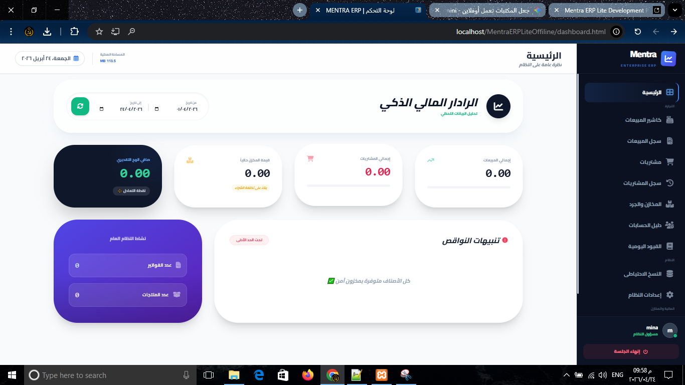

01
الرادار المالي واللوحة الرئيسية
فور دخولك للنظام، تستقبلك لوحة التحكم الذكية. صُممت لتعطيك الخلاصة في ثوانٍ معدودة.
- معرفة صافي الربح التقديري لحظياً.
- مراقبة إجمالي المبيعات والمشتريات لنطاق زمني محدد.
- نظام تنبيهات النواقص يخبرك بالأصناف التي قاربت على الانتهاء.
.png)
02
كاشير المبيعات (POS)
نقطة بيع سريعة، مرنة، ومصممة لتحمل ضغط العمل في المحلات والسوبر ماركت.
- دعم كامل لأجهزة قارئ الباركود (Scanner).
- إضافة خصومات وتسجيل اسم العميل على الفاتورة.
- إمكانية البيع كاش أو شبكة (فيزا) بضغطة زر.
.png)
03
إدارة المخازن والجرد
وداعاً للعجز العشوائي. شاشة المخازن تتيح لك إحكام السيطرة على كل قطعة تدخل أو تخرج من محلك.
- إضافة أصناف جديدة بتفاصيل (سعر الشراء، البيع، الباركود).
- فلاتر سريعة لعرض (الأصناف التي نفدت - أو قاربت على الانتهاء).
- استخراج قائمة جرد بصيغة PDF أو إكسيل.
.png)
04
المحاسبة والقيود اليومية
نظام محاسبي احترافي يعمل في الخلفية تلقائياً دون أن تشعر بالتعقيد، يدير أصولك والتزاماتك.
- دليل حسابات مبسط (شجرة الحسابات).
- مراقبة إجمالي الأصول، الخصوم، وصافي حقوق الملكية.
- سجل آلي للقيود اليومية لضمان سلامة الدفاتر مالياً.
.png)
05
النسخ الاحتياطي والأمان
لأن النظام "أوفلاين"، بياناتك مسؤوليتك. صممنا لوحة أمان تضمن لك عدم ضياع أي فاتورة.
- معرفة حجم المساحة المحلية المستهلكة بالمتصفح.
- تصدير واستيراد قواعد البيانات بنقرة واحدة (Excel / JSON).
- إعدادات سريعة لتغيير اسم المتجر وهاتف النشاط المطبوع عالفاتورة.